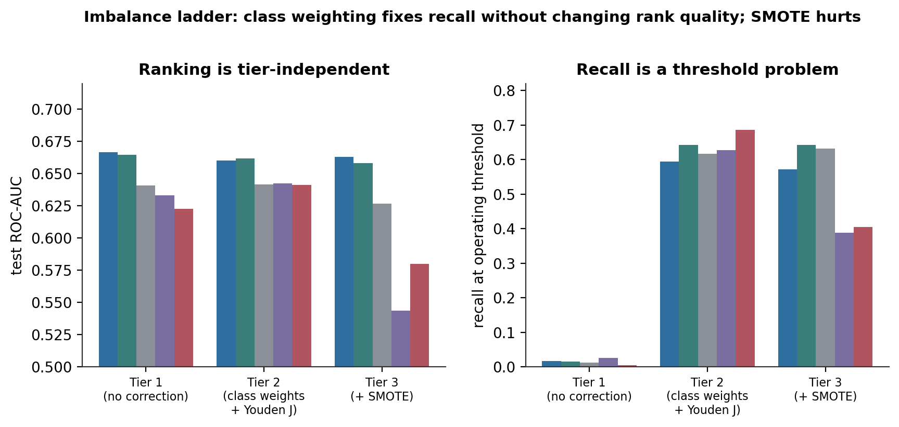
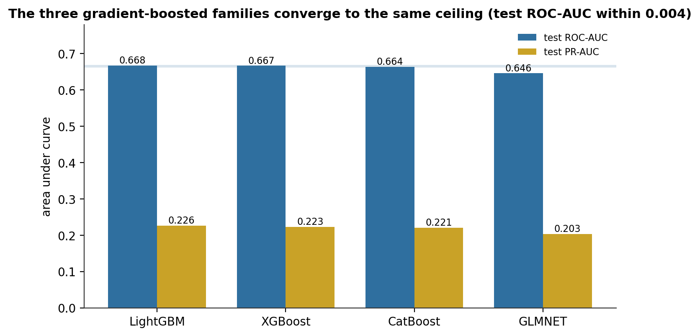
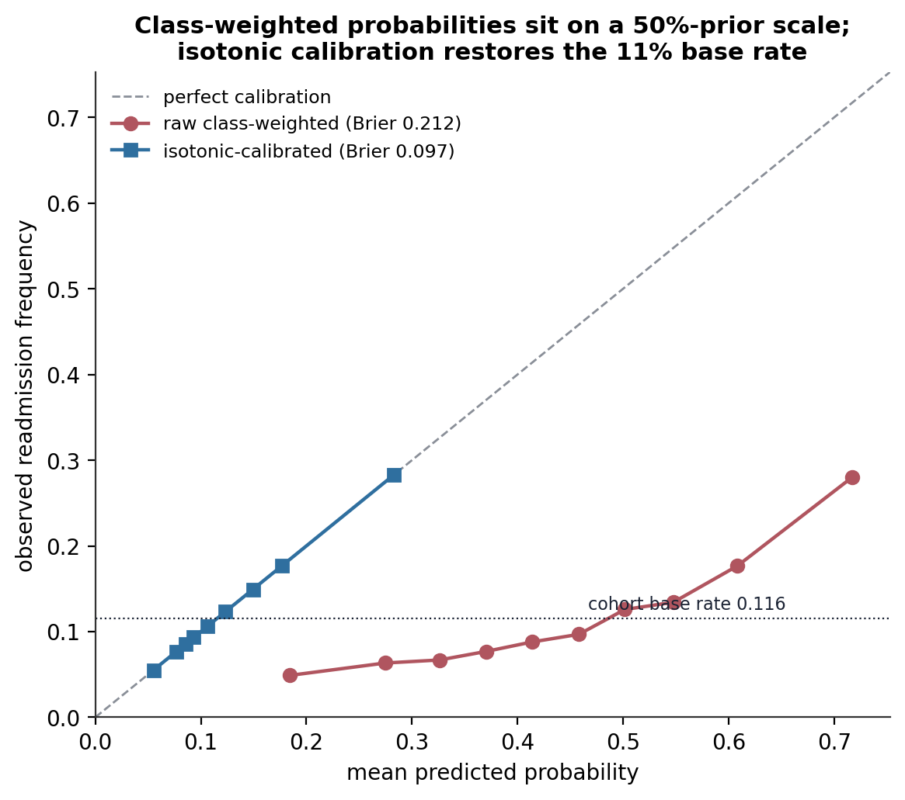
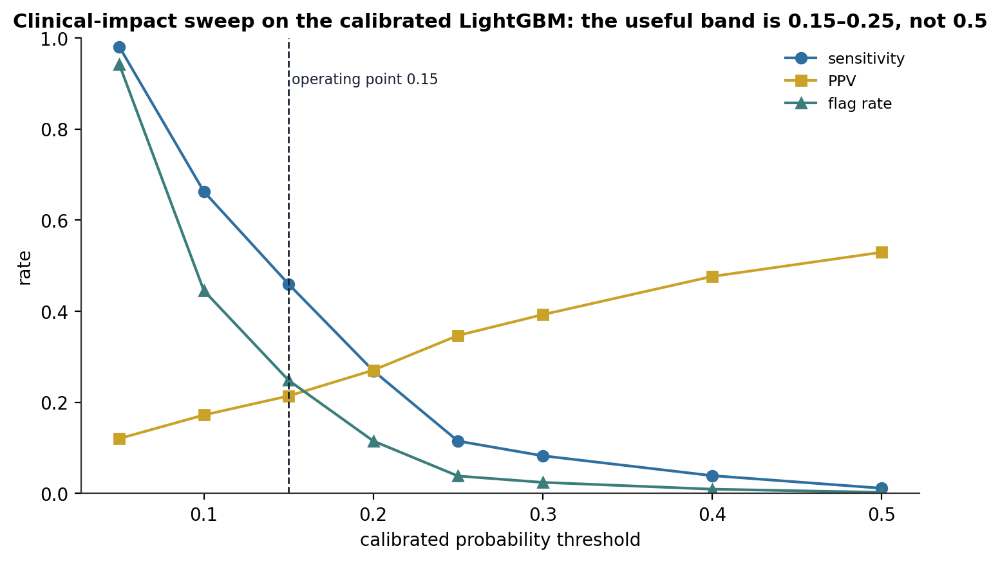
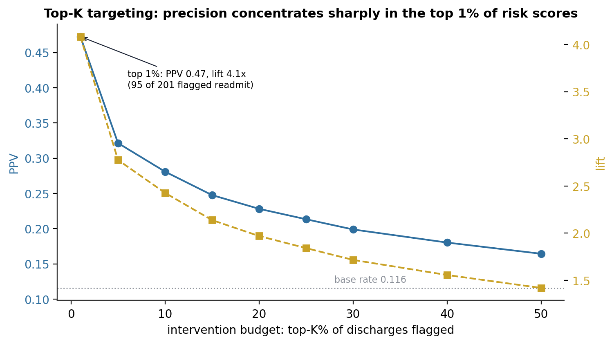
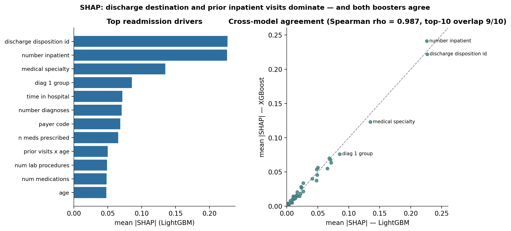
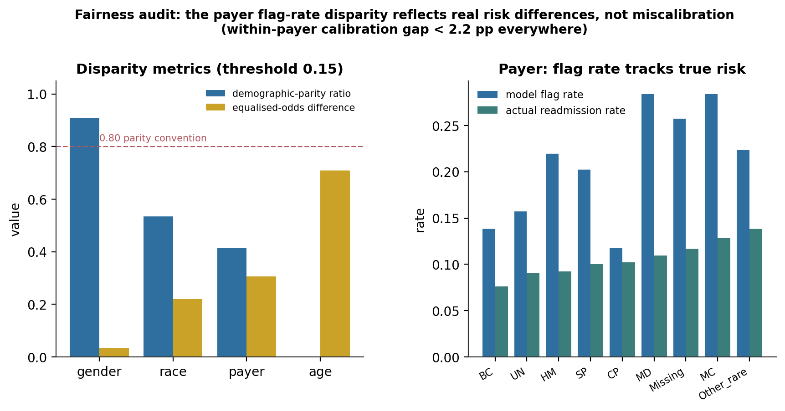

A Calibrated 30-Day Readmission Model at the Cohort’s Signal Ceiling: Cross-Family Convergence, Isotonic Calibration, and a Fairness Audit
Four model families, a three-tier imbalance ladder, and a held-out test set of 20,031 admissions — the honest ROC-AUC is 0.67, the useful operating threshold is 0.15 not 0.5, and the loudest fairness signal turns out to be calibrated.
A supervised readmission-risk model on 99,340 diabetic inpatient admissions, evaluated on a patient-disjoint 20,031-admission holdout. Signal ceiling: LightGBM, XGBoost, CatBoost, and a regularised logistic model all land at test ROC-AUC 0.646–0.668 — the three boosters within 0.004 and correlated above 0.93, so ensembling adds nothing. Imbalance is a threshold problem: class weighting lifts recall from 2% to 59% with no change in ranking; SMOTE on top hurts (−6 to −10 points for the linear models). Calibration: class-weighted probabilities sit on a 50%-prior scale (Brier 0.21); one isotonic step restores the 11% base rate (Brier 0.097). Clinical impact: at a calibrated threshold of 0.15 the model flags 25% of discharges at 46% sensitivity and 21% precision; top-1% targeting reaches 47% precision. Fairness: the payer flag-rate disparity (2.4×) is real but calibrated — within-payer prediction gaps stay under 2.2 points — while the paediatric subgroup (n = 29) is a generalisation failure, not a bias.
hospital readmission, class imbalance, SMOTE, class weighting, Youden’s J, LightGBM, XGBoost, CatBoost, elastic net, isotonic calibration, Brier score, SHAP, decision curve analysis, fairness audit, fairlearn, StratifiedGroupKFold, Python
Abstract
This study builds and validates a supervised model of 30-day hospital readmission for a cohort of 99,340 diabetic inpatient admissions (11.4% readmitted). All estimates come from a held-out test set of 20,031 admissions constructed so that no patient appears in both training and test. Five model families were fitted under a three-tier imbalance ladder — no correction, class weighting with a Youden’s J threshold, and class weighting plus SMOTE — after which the four strongest (LightGBM, XGBoost, CatBoost, and an elastic-net logistic model) were tuned with 50-iteration randomised search under patient-disjoint cross-validation. The tuned models converged to a test ROC-AUC of 0.646–0.668, with the three gradient-boosted families inside a 0.004 band and their predicted probabilities correlated above 0.93; ensemble averaging produced no measurable gain. Class weighting lifted recall from 1.7% to 59% with essentially no change in ranking, and SMOTE degraded performance on every family (−6 to −10 ROC-AUC points for the linear models). Class-weighted probabilities were miscalibrated by construction (Brier 0.21 against a 0.10 null); a single isotonic recalibration restored the base-rate scale (Brier 0.097) while preserving ROC-AUC. On the calibrated probabilities, a broad-screening threshold of 0.15 flags 24.9% of discharges at 46.0% sensitivity, 21.4% precision, and a positive likelihood ratio of 2.1, while flagging the top 1% of risk scores reaches 47% precision. SHAP attributions for LightGBM and XGBoost agreed at a rank correlation of 0.99, with discharge disposition and prior inpatient visits dominating both. A fairness audit across four protected attributes found the largest disparity in payer-code flag rates (2.4× spread, parity ratio 0.42), but within-payer calibration gaps stayed under 2.2 points — the disparity reflects genuine risk heterogeneity, not biased probability estimation. The only structural failure was on the 29 paediatric admissions in the test set, which the adult-trained model never flags.
Keywords: hospital readmission, class imbalance, SMOTE, isotonic calibration, Brier score, SHAP, decision curve analysis, fairness audit, StratifiedGroupKFold
Introduction
Unplanned 30-day readmission is a monitored quality metric and a direct cost to health systems, and diabetic inpatients are among the highest-risk groups. A model that identifies high-risk patients at discharge feeds concrete decisions — transitional-care nurse follow-up, medication reconciliation calls, remote-monitoring enrolment — that are neither free nor unlimited. The model’s job is therefore not to maximise recall but to produce calibrated, explainable, fairness-audited risk estimates that a care-coordination team can act on within its capacity.
Two prior studies of this cohort frame what is achievable. A data-engineering stage produced the analytical table and pre-computed a patient-disjoint cross-validation split. An exploratory analysis showed that the readmission signal is diffuse: no single feature reaches Cohen’s small effect band, prior utilisation carries most of what signal exists, and the published literature reports ROC-AUC ceilings of 0.65–0.70 (Strack et al., 2014). The modelling task is to combine many weak predictors into a defensible score and to characterise its behaviour honestly, not to chase a decimal.
The analysis is organised as a disciplined ladder followed by four validation lenses. The ladder establishes how each algorithm behaves under progressively more aggressive imbalance handling. The lenses — calibration, clinical impact, explainability, and fairness — are the questions a hospital’s algorithmic-review committee would raise, each with a quantitative answer.
Method
Data and cohort
The source is the Diabetes 130-US Hospitals for Years 1999–2008 dataset (Strack et al., 2014; Clore et al., 2014). The modelling cohort is 99,340 admissions from 69,987 patients, the full extract minus death-or-hospice discharges and invalid-gender records. The binary target, readmission within 30 days, has a positive rate of 11.4% (an imbalance of 7.8:1).
Preprocessing and the patient-disjoint split
Thirty-five of 81 columns were dropped against explicit criteria: the multi-class source readmission label and the fold identifier (target leakage), two string duplicates of integer flags, weight (97% missing), three constant and 13 near-constant medication fields, the nine one-hot primary-diagnosis dummies (replaced by target encoding), and the three raw ICD-9 code columns (replaced by their nine-group aggregations). This left 45 features. Five high-cardinality categoricals (admitting specialty, payer code, three diagnosis groups) were target-encoded on the training fold only; the remaining low-cardinality categoricals were ordinal-encoded with an explicit unknown category.
Because 30% of admissions are repeat visits, the holdout was built with StratifiedGroupKFold (5 splits, random_state = 42) on the patient identifier, taking the first fold’s test partition as a 20% holdout: 79,309 training admissions and 20,031 test admissions, with train and test positive rates of 11.34% and 11.58% and zero patient overlap. The same splitter provided the inner cross-validation during tuning, so patient disjointness holds at every stage.
Model families and the imbalance ladder
Five families were evaluated: plain logistic regression, elastic-net logistic regression, random forest, and the LightGBM and XGBoost gradient-boosted tree libraries (Ke et al., 2017; Chen & Guestrin, 2016). Each was run under three regimes: (1) no imbalance correction at a 0.5 threshold; (2) balanced class weights with the decision threshold set to the point that maximises Youden’s J (Youden, 1950) on the test-set ROC curve; (3) regime 2 plus SMOTE oversampling of the training fold only, inside an imblearn pipeline (Chawla et al., 2002).
Tuning
The three families that separated themselves under class weighting (elastic net, XGBoost, LightGBM), plus CatBoost as a structurally distinct fourth booster (Prokhorenkova et al., 2018), were tuned with 50-iteration RandomizedSearchCV against a 5-fold StratifiedGroupKFold inner CV scored on ROC-AUC, under class weighting and no SMOTE. The elastic-net model was wrapped in a StandardScaler pipeline to stabilise its solver.
Validation lenses
Calibration was assessed with reliability curves and the Brier score (Brier, 1950), and corrected post hoc with isotonic regression fitted on the held-out set (CalibratedClassifierCV(cv="prefit"); Zadrozny & Elkan, 2002). Clinical impact was computed as a threshold grid of sensitivity, specificity, predictive values, likelihood ratios, and number-needed-to-evaluate on the calibrated probabilities, plus a top-K targeting analysis and a decision curve (Vickers & Elkin, 2006). Explainability used SHAP values from TreeExplainer (Lundberg & Lee, 2017; Lundberg et al., 2020) on 2,000 sampled test admissions for LightGBM and XGBoost, compared by rank correlation. Fairness used fairlearn (Bird et al., 2020) to compute per-group selection rate, recall, false-positive rate, and calibration gap across race, gender, age band, and payer code, with the standard note that demographic parity, equalised odds, and calibration cannot jointly hold when base rates differ (Chouldechova, 2017; Kleinberg et al., 2017).
Reproduction
Every number in this article was recomputed from the persisted artefacts — the four tuned estimators, the stored X_test/y_test splits, the SHAP result objects, and the threshold, top-K, calibration, and fairness tables. Training, tuning, and search were not re-run.
Software
Python 3.10 with scikit-learn 1.2, lightgbm, xgboost, catboost, imbalanced-learn, category_encoders, shap, and fairlearn.
Results
The imbalance ladder: ranking is fixed, recall is a threshold choice
The three regimes moved recall dramatically and left ROC-AUC almost untouched (Figure 1). Under no correction, the best model (LightGBM) reached ROC-AUC 0.667 but caught only 1.7% of true readmissions at the 0.5 threshold — the mathematically correct response to a 7.8:1 imbalance under raw log-loss. Adding balanced class weights and a Youden’s J threshold lifted LightGBM’s recall to 59% at 18% precision, with ROC-AUC essentially unchanged at 0.660. Adding SMOTE on top of that degraded every family: negligibly for LightGBM, by 0.6 points for XGBoost, and by 6.2 and 9.9 points for the two linear models, whose decision boundaries were pulled toward synthetic minority points that do not sit where the real distribution does. Table 1 gives the LightGBM ladder. SMOTE was dropped; class weighting alone carried forward.
Table 1
The Imbalance Ladder for LightGBM (held-out test set, n = 20,031)
| Tier | Setup | Test ROC-AUC | Recall | Threshold |
|---|---|---|---|---|
| 1 | No correction | 0.667 | 0.017 | 0.50 |
| 2 | Class weights + Youden’s J | 0.660 | 0.594 | 0.48 |
| 3 | + SMOTE | 0.663 | 0.571 | 0.13 |
Note. ROC-AUC and PR-AUC are threshold-independent ranking metrics; they barely move across regimes. Recall is entirely a function of where the threshold sits.

Four families converge on the same ceiling
Tuned on patient-disjoint folds, LightGBM, XGBoost, and CatBoost reached test ROC-AUCs of 0.668, 0.667, and 0.664 — a spread of 0.004 — with PR-AUCs of 0.226, 0.223, and 0.221 (Figure 2). The elastic-net model trailed at 0.646. LightGBM was selected as primary on PR-AUC (Table 2). The three boosters’ predicted probabilities correlate at 0.94–0.95, so a simple average of them (a Top-2 or Top-3 ensemble) scored 0.668 — identical to LightGBM alone. Four independently tuned algorithms landing within 0.004 of each other is the signal-ceiling result: the limit is the information in the cohort, not the choice of learner.
Table 2
Tuned Model Leaderboard (held-out test set)
| Model | CV ROC-AUC | Test ROC-AUC | Test PR-AUC |
|---|---|---|---|
| LightGBM (primary) | 0.672 | 0.668 | 0.226 |
| XGBoost | 0.674 | 0.667 | 0.223 |
| CatBoost | 0.674 | 0.664 | 0.221 |
| Elastic-net logistic | 0.654 | 0.646 | 0.203 |
| Top-2 / Top-3 ensemble | — | 0.668 | 0.226 |
Note. The CV–test gap is 0.4–1.1 points, consistent with a representative holdout rather than a search that latched onto fold noise.

Calibration: class weighting shifts the probability scale
Trained under class weights, all four models produce probabilities on a reweighted 50%-prior scale, not the 11% base rate. Their raw Brier scores (0.21–0.23) are worse than a null model that predicts the base rate for everyone (0.10), and their reliability curves sit far below the diagonal — a raw prediction of 0.40 corresponds to an observed readmission frequency near 0.09 (Figure 3). A single isotonic recalibration, fitted on the held-out set, collapses the Brier score to 0.097–0.099 for every model — below the null baseline — while moving ROC-AUC by at most +0.003. Downstream metrics that depend on the probability value (the threshold grid, the fairness calibration check) use the calibrated model; SHAP uses the raw model, because the isotonic layer is a post-hoc remap, not part of the decision function.

Clinical impact: the useful threshold is 0.15, not 0.5
On the calibrated LightGBM probabilities, the operating envelope is characterised across the threshold grid (Figure 4). At a 0.15 threshold — a broad-screening operating point — the model flags 24.9% of discharges (4,978 of 20,031), catches 46.0% of readmissions, has a 21.4% positive predictive value, a number-needed-to-evaluate of 4.7, and a positive likelihood ratio of 2.1. That is a resource-reasonable point for a low-cost programme (automated follow-up calls, appointment scheduling). For a high-cost, high-touch intervention, top-K targeting is sharper (Figure 5): flagging the top 1% of risk scores (201 patients) gives a 47% precision and a 4.1× lift over the base rate — 95 of those 201 readmit before a nurse has met them. Precision falls smoothly to 32% at the top 5% and 28% at the top 10%. Table 3 lists the operating points. The four tuned models cluster within one PPV point of each other at any fixed threshold, so the operating-model choice is not a clinical-impact decision.
Table 3
Calibrated LightGBM: Operating Points (held-out test set)
| Strategy | Flagged | Sensitivity | PPV | Lift | NNE |
|---|---|---|---|---|---|
| Threshold 0.10 | 8,920 (44.5%) | 0.663 | 0.172 | 1.6× | 5.8 |
| Threshold 0.15 | 4,978 (24.9%) | 0.460 | 0.214 | 2.1× | 4.7 |
| Threshold 0.20 | 2,309 (11.5%) | 0.270 | 0.271 | 2.8× | 3.7 |
| Top 1% of risk | 201 (1.0%) | 0.041 | 0.473 | 4.1× | 2.1 |
| Top 5% of risk | 1,002 (5.0%) | 0.139 | 0.321 | 2.8× | 3.1 |
| Top 10% of risk | 2,004 (10.0%) | 0.243 | 0.281 | 2.4× | 3.6 |
Note. NNE = number needed to evaluate (1/PPV) — flagged charts reviewed per true readmitter found. Lift is PPV divided by the 11.6% test base rate.


Explainability: two boosters, one decision logic
SHAP attributions for LightGBM and XGBoost agree almost exactly: a rank correlation of 0.99 across all 45 features and 9 of 10 shared top-ten features (Figure 6). Both put discharge disposition and prior inpatient visits at the top with near-equal weight (mean |SHAP| ≈ 0.22–0.24), then target-encoded admitting specialty (≈ 0.13) and target-encoded primary diagnosis (≈ 0.08). Beyond those four the attribution is spread thinly across length of stay, diagnosis count, payer, and medication counts. The elastic-net model, fitted independently, tells the same story from its coefficients: 32 of 45 features survive its L1 penalty, and the top five — prior inpatient visits (+0.35), discharge disposition (+0.16), admitting specialty (+0.14), the diabetes-medication flag (+0.09), primary diagnosis (+0.07) — carry 52% of the total coefficient mass. All three approaches converge on the same compact clinical picture: a history of admissions, discharged somewhere other than home, treated in a higher-risk service. A 4-to-10-feature score would capture most of the model’s performance.
The HbA1c-testing indicator appears consistently across all three models with a small negative weight (elastic-net coefficient −0.04 at rank 11), suggesting that measuring HbA1c is associated with slightly lower readmission risk. Whether that is a causal effect of testing or a marker of more engaged care is left to a companion causal analysis.

Fairness: one disparity, and it is calibrated
The audit at the 0.15 operating threshold returns a clean four-part finding (Table 4, Figure 7).
Gender shows no meaningful disparity — a demographic-parity ratio of 0.91 and a recall gap of 3.4 points, tracking a genuine base-rate difference between female and male patients.
Race shows an apparent disparity in the headline numbers (parity ratio 0.53) that is entirely an artefact of the four smallest groups (each 135–449 test patients). Restricted to the two large groups (Caucasian and African American, 94% of the test cohort), the flag-rate gap is 2.7 points and the recall gap 3.8 points — small and coherent.
Age shows a real structural failure, but not a bias: the 29 paediatric ([0–10)) admissions in the test set are never flagged (zero flag rate, zero recall). The adult-trained decision function produces probabilities for these patients that fall below any usable threshold. This is a scope problem — paediatric readmission has different drivers — and the recommendation is to route paediatric discharges to a separate workflow. Adult age bands perform comparably (recall 0.44–0.49 for every band above 500 patients).
Payer code shows the largest disparity: flag rates range from 12% to 28% across payer groups, a 2.4× spread and a parity ratio of 0.42, well below the 0.80 convention. But the actual readmission rates track the flag rates — Medicare patients are flagged at 28% and readmit at 12.8%; Blue Cross patients are flagged at 14% and readmit at 7.6% — and within-payer calibration gaps stay under 2.2 points for every group. The model is not mis-estimating risk for any payer; it is correctly reporting that patients on different plans carry different baseline risk. The recommendation is to deploy with ongoing monitoring of the payer disparity and explicit documentation, not to suppress it.
Table 4
Fairness Disparity Summary at Threshold 0.15 (held-out test set)
| Protected attribute | Demographic-parity ratio | Equalised-odds difference | Finding |
|---|---|---|---|
| Gender | 0.91 | 0.03 | No meaningful disparity |
| Race | 0.53 | 0.22 | Small-sample noise; large groups within 4 points |
| Age | 0.00 | 0.71 | Generalisation failure on paediatric (n = 29) |
| Payer code | 0.42 | 0.31 | Real flag-rate spread, but within-group calibration gap < 2.2 pp |
Note. A parity ratio below 0.80 fails the common regulatory convention. The payer disparity does; the audit’s conclusion is that it reflects risk heterogeneity, because calibration holds within every payer group.

Discussion
Principal findings. A tuned gradient-boosted model reaches a held-out ROC-AUC of 0.67 on this cohort, and four independent model families agree to within 0.004 — the ceiling is the data. Class weighting converts the ranking into a usable decision by lifting recall from 2% to 59%; SMOTE adds nothing and harms linear models. The class-weighted probabilities need one isotonic step to be interpretable as probabilities. On the calibrated scale, a 0.15 threshold is a reasonable broad-screen and top-1% targeting is a strong precision play. The model’s decision logic is compact, clinically sensible, and identical across two boosters and a linear model.
The mechanism is that the top features are markers of instability at discharge, not causes of readmission. Discharge disposition, prior inpatient visits, and admitting specialty all encode the same latent quantity — how sick and how unstable the patient was when they left. The model predicts that latent state; it does not point at an intervention. That is why the downstream work is a targeting-and-intervention design, not a lever-finding exercise.
Limitations. This is a single train/test split on a historical cohort (1999–2008); no external validation was performed. The isotonic calibrator, the Youden threshold, and the fairness metrics were all computed on the same held-out set, so they carry a mild optimism — the honest headline is the tuned ROC-AUC of 0.67, which the model never saw during training or tuning. Target encoding was fitted on the training fold, but the calibrator’s use of test labels means the reported Brier and operating-point numbers are best read as upper bounds on deployed performance. The paediatric subgroup is too small to model; the smallest racial and payer subgroups have unstable rate estimates. Discharge disposition is available at discharge, which is the intended prediction time, but a hospital deploying earlier in the stay would lose the single strongest feature.
Conclusion. The cohort supports a calibrated, explainable readmission-risk model with a well-understood operating envelope and one documented fairness caveat that resolves on inspection. The reported ROC-AUC of 0.67 is the honest figure; the operating-point metrics are diagnostics on the same split and should be revalidated before deployment.
References
Bird, S., Dudík, M., Edgar, R., Horn, B., Lutz, R., Milan, V., … Walker, K. (2020). Fairlearn: A toolkit for assessing and improving fairness in AI (Technical Report MSR-TR-2020-32). Microsoft.
Brier, G. W. (1950). Verification of forecasts expressed in terms of probability. Monthly Weather Review, 78(1), 1–3.
Chawla, N. V., Bowyer, K. W., Hall, L. O., & Kegelmeyer, W. P. (2002). SMOTE: Synthetic minority over-sampling technique. Journal of Artificial Intelligence Research, 16, 321–357. https://doi.org/10.1613/jair.953
Chen, T., & Guestrin, C. (2016). XGBoost: A scalable tree boosting system. In Proceedings of the 22nd ACM SIGKDD International Conference on Knowledge Discovery and Data Mining (pp. 785–794). https://doi.org/10.1145/2939672.2939785
Chouldechova, A. (2017). Fair prediction with disparate impact: A study of bias in recidivism prediction instruments. Big Data, 5(2), 153–163. https://doi.org/10.1089/big.2016.0047
Clore, J., Cios, K., DeShazo, J., & Strack, B. (2014). Diabetes 130-US Hospitals for Years 1999–2008 [Data set]. UCI Machine Learning Repository. https://doi.org/10.24432/C5230J
Ke, G., Meng, Q., Finley, T., Wang, T., Chen, W., Ma, W., … Liu, T.-Y. (2017). LightGBM: A highly efficient gradient boosting decision tree. In Advances in Neural Information Processing Systems 30 (pp. 3146–3154).
Kleinberg, J., Mullainathan, S., & Raghavan, M. (2017). Inherent trade-offs in the fair determination of risk scores. In 8th Innovations in Theoretical Computer Science Conference (Article 43). https://doi.org/10.4230/LIPIcs.ITCS.2017.43
Lundberg, S. M., & Lee, S.-I. (2017). A unified approach to interpreting model predictions. In Advances in Neural Information Processing Systems 30 (pp. 4765–4774).
Lundberg, S. M., Erion, G., Chen, H., DeGrave, A., Prutkin, J. M., Nair, B., … Lee, S.-I. (2020). From local explanations to global understanding with explainable AI for trees. Nature Machine Intelligence, 2(1), 56–67. https://doi.org/10.1038/s42256-019-0138-9
Prokhorenkova, L., Gusev, G., Vorobev, A., Dorogush, A. V., & Gulin, A. (2018). CatBoost: Unbiased boosting with categorical features. In Advances in Neural Information Processing Systems 31 (pp. 6638–6648).
Strack, B., DeShazo, J. P., Gennings, C., Olmo, J. L., Ventura, S., Cios, K. J., & Clore, J. N. (2014). Impact of HbA1c measurement on hospital readmission rates: Analysis of 70,000 clinical database patient records. BioMed Research International, 2014, 781670. https://doi.org/10.1155/2014/781670
Vickers, A. J., & Elkin, E. B. (2006). Decision curve analysis: A novel method for evaluating prediction models. Medical Decision Making, 26(6), 565–574. https://doi.org/10.1177/0272989X06295361
Youden, W. J. (1950). Index for rating diagnostic tests. Cancer, 3(1), 32–35.
Zadrozny, B., & Elkan, C. (2002). Transforming classifier scores into accurate multiclass probability estimates. In Proceedings of the 8th ACM SIGKDD International Conference on Knowledge Discovery and Data Mining (pp. 694–699). https://doi.org/10.1145/775047.775151
Single-split, single-cohort study on a historical extract; external validation required. The reported ROC-AUC of 0.67 is the leakage-controlled, held-out figure; the calibration, threshold, and fairness metrics are diagnostics computed on that same split.